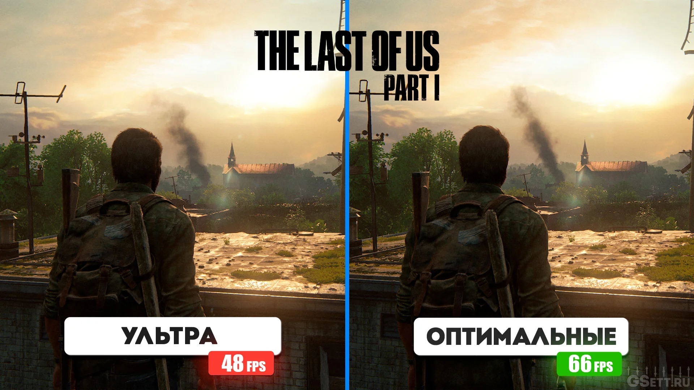

The Last of Us Part I
Optimised settings for The Last of Us Part I:
Youtube Guide Down Config
- Дальность прорисовки: «Максимально»
- Детализация динамических объектов: «Максимально»
🛈 Или «Высоко» для получения доп. 1-1,5% к FPS. - Детализация персонажей: «Высоко»
- Детализация ландшафта: «Высоко»
- Параметры текстур: «Максимально» – для видеокарт с более 12GB VRAM
🛈 «Высоко» для видеокарт с 8GB памяти, а скорость загрузки текстур на «Средне». - Фильтрация текстур: «X16»
🛈 Или хотя бы «X8», если нужно получить доп. 1-2% к FPS. - Качество сэмплинга текстур: «Максимально»
- Качество теней от рассеянного света: «1/4 разрешения»
- Разрешение направленных теней: «Средне»
🛈 Либо «Низко» для получения доп. 2-3% к FPS с едва заметным ухудшением теней. - Дистанция направленных теней: «Средне»
🛈 Либо «Низко» для получения доп. 10-12% к FPS с небольшим ухудшением дальности прорисовки теней. - Панорамные карты освещения: «Включено»
- Качество динамического освещения: «Высоко»
- Разрешение теней от направленных источников: «Максимально»
- Разрешение теней от точечных источников: «Средне»
- Отражённый свет: «Выключено»
- Качество теней в экранном пространстве: «Высоко»
- Динамические тени в экранном пространстве: «Включено»
- Качество контактных теней: «Максимально»
- Затенение фонового света в экранном пространстве: «Включено»
- Качество фильтрации затенения фонового света: «Высоко»
- Затенение направленного света в экранном пространстве: «Включено»
- Коническая трассировка в экранном пространстве: «Включено»
- Отражения в экранном пространстве: «Включено», все ползунки на 100%.
- Качество отражений в реальном времени: «Высоко»
- Качество отражений облаков в реальном времени: «Включено»
- Рассеивание света в экранном пространстве: «Включено»
🛈 Но если для вас важна доп. производительность около 2-3%, то лучше выключить. - Качество преломления: «Многослойное преломление»
- Глубина резкости: «Только видеоролики»
- Качество эффекта скорости: «Выключено»
- Разрешение ореолов: «Полное разрешение»
- Плотность эффектов: «Высоко»
- Качество объёмных эффектов: «Средне»
🛈 Но если необходим доп. прирост около 10% к FPS, то используйте вариант «Низко», пожертвовав разрешением тумана и световых лучей. - Блики оптики: «Полное разрешение»
- Качество анимации: «Высоко»
- Плотность второстепенных персонажей: «В зависимости от вашего CPU»
🛈 Для бюджетных процессоров лучше использовать «Минимальное» значение, но если у вас мощный CPU, то используйте максимальное значение. - Качество ИИ: «Высоко»